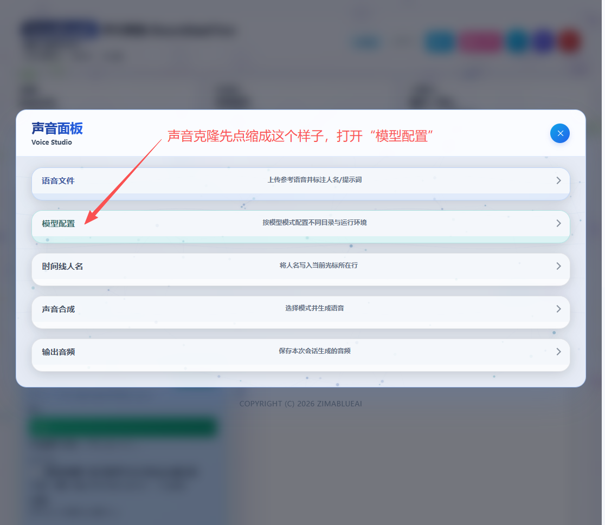
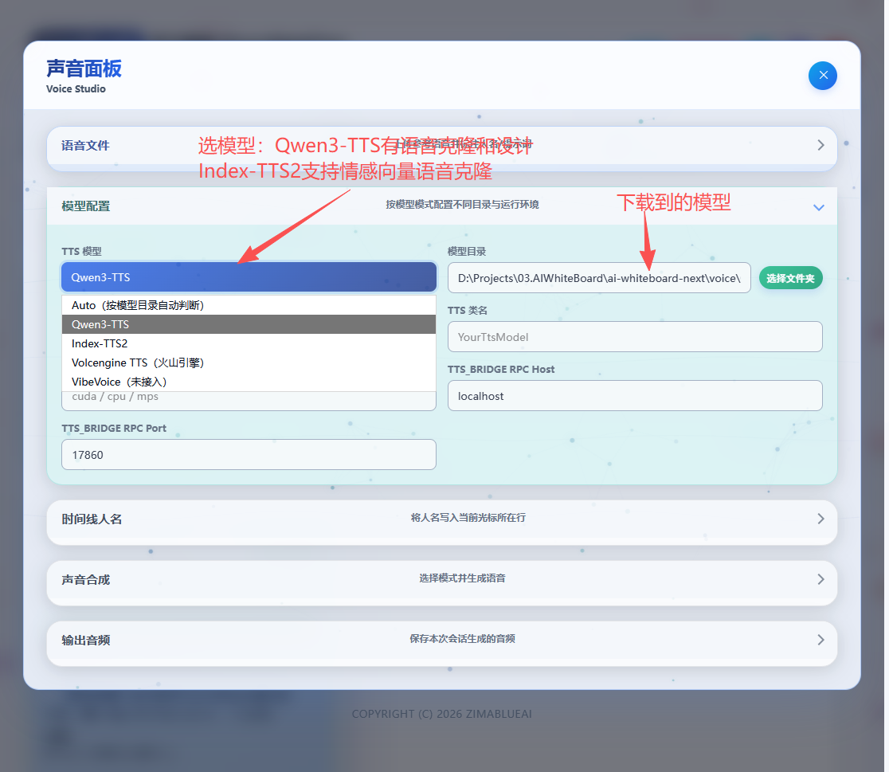
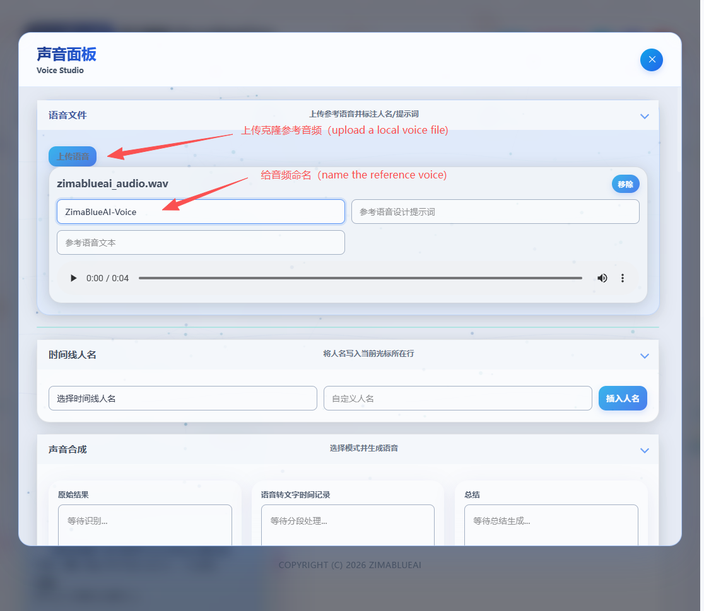
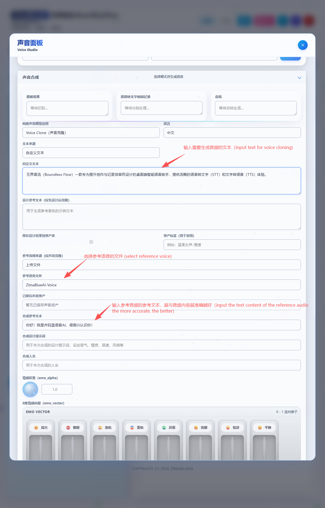
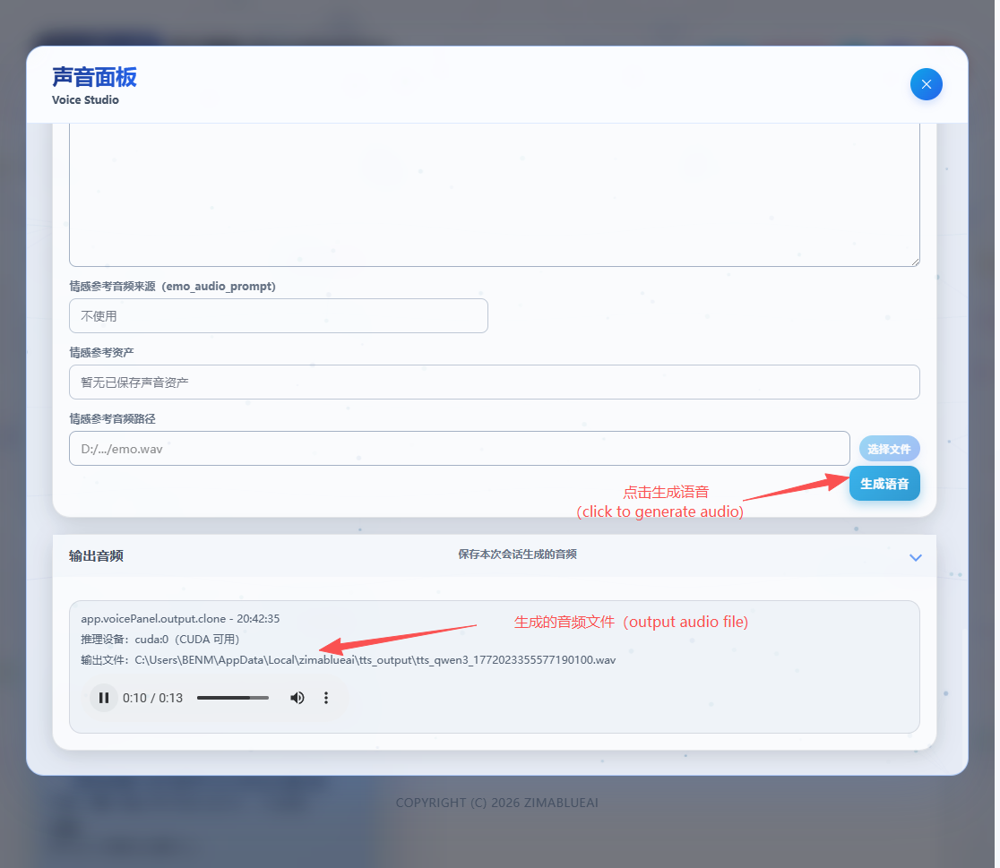

语音合成 (TTS) 与声音克隆
无界音流不仅能“听懂”您的话，还能“说出”您的文字。通过内置的 Python Bridge 和本地模型，它提供了强大的文字转语音（TTS）和声音克隆功能。目前系统集成了 Qwen3-TTS 和 Index-TTS2 两大核心引擎，满足不同场景的需求。





Qwen3-TTS 引擎
Qwen3-TTS 是一个强大的多功能语音合成引擎，支持三种不同的工作模式：
🎙️ Base (基础模型)
提供高质量、自然流畅的标准语音合成。适用于常规的文本朗读、有声书制作等场景，无需任何参考音频即可生成清晰的语音。
👥 CustomVoice (声音克隆)
只需提供一段 5-15 秒的清晰参考音频，即可克隆出与参考音频音色高度相似的语音。非常适合制作个性化配音或数字人分身。
✨ VoiceDesign (声音设计)
无需参考音频，直接通过文本提示词（Prompt）来“捏”出你想要的声音。例如输入“一个年轻女性，声音欢快”，模型即可生成符合描述的全新音色。
Index-TTS2 引擎
Index-TTS2 引擎在声音克隆的基础上，引入了更精细的情感和风格控制能力：
- 情感向量控制：允许在合成时注入特定的情感向量，使生成的语音带有喜悦、悲伤、愤怒等丰富的情感色彩。
- 提示词 (Prompt) 引导：结合文本提示词，可以更精准地控制发音的语气、语调和节奏，让克隆出来的声音不仅“像”，而且“有感情”。
提示： 声音克隆的效果很大程度上取决于参考音频的质量。请尽量使用发音清晰、无背景噪音、语速适中的音频作为参考。
本地模型下载与目录配置（推荐）
如果您使用本地 TTS（Qwen3-TTS / Index-TTS2），需要先下载模型文件，然后在设置里填写 TTS 模型目录（参考 ModelScope 文档；小白安装指南见 附录 A）。
Qwen3-TTS（Base / CustomVoice / VoiceDesign）
分别下载三种模式对应的模型目录：
modelscope download --model Qwen/Qwen3-TTS-12Hz-1.7B-Base --local_dir ./Qwen/Qwen3-TTS-12Hz-1.7B-Base
modelscope download --model Qwen/Qwen3-TTS-12Hz-1.7B-CustomVoice --local_dir ./Qwen/Qwen3-TTS-12Hz-1.7B-CustomVoice
modelscope download --model Qwen/Qwen3-TTS-12Hz-1.7B-VoiceDesign --local_dir ./Qwen/Qwen3-TTS-12Hz-1.7B-VoiceDesign在无界音流设置里，将 TTS 模型目录 指向您当前要使用的模型目录（例如 Base 模式使用 ./Qwen/Qwen3-TTS-12Hz-1.7B-Base）。
Index-TTS2（声音克隆）
modelscope download --model IndexTeam/IndexTTS-2 --local_dir ./IndexTeam/IndexTTS-2在无界音流设置里，将 TTS 模型目录 指向 IndexTTS-2 的模型目录。
注意： 离线模式下不会自动下载模型。如果目录不存在或不可用，TTS 会直接报错。
云端 API 服务配置
除了强大的本地模型，无界音流还支持接入多种主流的云端 TTS API 服务，为您提供更多样化的音色选择和更稳定的合成体验。目前支持的云端 API 包括：
- 火山引擎 (Volcengine)：提供丰富的高质量音色，支持多种方言和外语。
- OpenAI (TTS)：提供自然逼真的语音合成，支持
alloy,echo,fable,onyx,nova,shimmer等经典音色。 - MiniMax：国内领先的语音大模型，支持极具表现力和情感的语音生成。
火山引擎（Volcengine）配置说明
在无界音流的“设置”面板中选择 Volcengine TTS（火山引擎） 后，至少需要填写：
- AppId：火山引擎应用标识
- Token：访问令牌
- Cluster：集群标识（例如
volcano_tts/volcengine_tts） - VoiceType：音色标识
可选项包括 UID、音频格式（Encoding）、采样率（Rate）、语速/音量/音高倍率、情感（Emotion）等。开通与音色选择可参考 附录 C（包含官方链接）。
配置方法： 请在无界音流的“设置” -> “API 配置”面板中，选择您想要使用的服务商，并填入相应的 API Key 和相关参数。配置完成后，即可在语音合成界面直接选择对应的云端音色进行使用。
TTS 运行环境配置
为了使用 TTS 和声音克隆功能，您需要确保本地环境已正确配置：
- 完整安装包：如果您使用的是包含 TTS 运行时的完整安装包，则无需额外配置。
- Lite 包 + 运行时下载：如果您使用的是 Lite 包，应用会在首次使用 TTS 功能时提示您下载并解压 TTS 运行时（Python 环境及相关依赖）。请按照提示操作，或参考
INSTALL.md中的详细说明。
Copyright(c) ZimaBlueAI
齐码蓝智能（大理市 ）有限责任公司